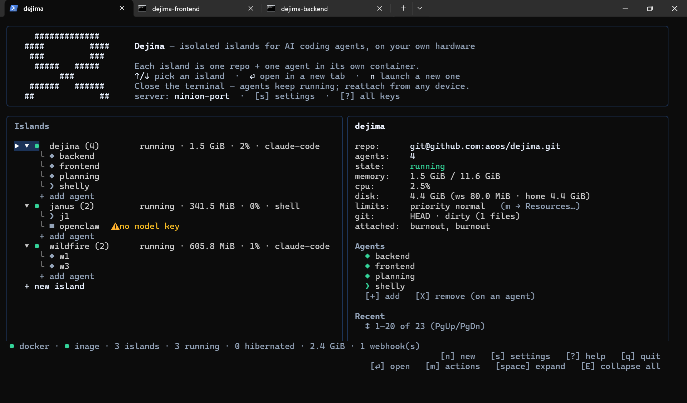
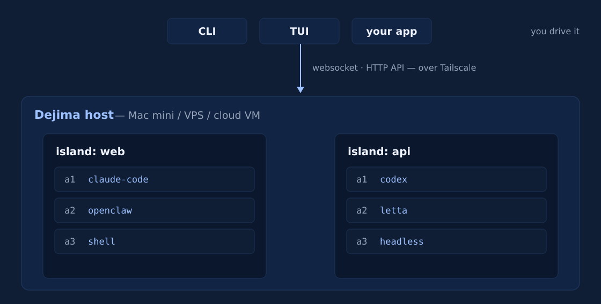
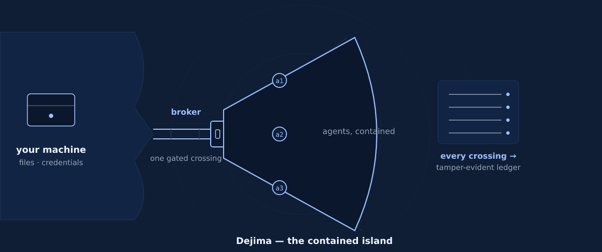

Manage a fleet of agents on your Mac mini, Linux box, local folder, or cloud.
Infrastructure for your agents.
None of the worry.
Run your coding agents without the tmux-and-SSH grind, and without handing them the whole machine.
Session resume
Run dejima, hit enter on a project, and you're in the agent. Close the laptop and it keeps working; reattach from any device and the screen is where you left it. Switching projects is another keystroke, not another SSH login.
Fleet monitoring
Status, CPU, and memory for every agent in one dashboard. Jump between projects and agents with a keystroke, so switching context costs you nothing.
A better remote terminal
A remote shell normally costs you the clipboard and drag-drop. Here Ctrl-V pastes a screenshot straight to the agent, dragging a file onto the window uploads it, and dejima cp moves work back out. No scp.
Secure sandboxing
Rogue agents can't break out. Each project is sealed in its own walled-off island, with no reach to your host machine, your files, or your other projects. It runs on hardware you own, so your code and credentials never leave your perimeter.
Still SSHing into tmux to run your agents? Read the full story. Working with others? Onboard a teammate to their own private fleet, without sharing your box.

Is Dejima right for you?
The hard parts of running agents, already handled
You shouldn't have to become an infrastructure engineer to run agents safely. That usually means wiring up containers, networking, credentials, and session plumbing yourself. Dejima is that layer, already built — and it rests on three things:
- Ease. One line installs it; run
dejimaand the TUI walks you to a sandboxed agent in minutes. It manages the containers, sessions, git worktrees, and logins so you don't — on your Mac mini, a VPS, or your own cloud VM, same one command. - Security. Every agent is walled off from your machine, your files, and the other agents; host access is deny-all, granted explicitly and read-only. The LLM calls go out, but your code, files, and auth never leave your box — auth is your Tailscale identity, not a vendor account. It fits NDA, regulated, and client-confidential work in a way a managed cloud can't.
- Audit. Every privileged crossing is written to a tamper-evident, hash-chained ledger you can read, export, and verify — so you can prove what an agent did, not just hope.
Running agents for a team that has to prove what they did? See Dejima for teams →
The isolation of a cloud sandbox, on hardware you own
You're probably weighing Dejima against however you run agents today. Here's where it lands:
| What you need | Dejima | Coder | E2B | Rivet | tmux + SSH | A dev container |
|---|---|---|---|---|---|---|
| Isolated workspace per project | ✓ | ✓ | ✓ | ✓ | ✗ | ✓ |
| Several agents at once, one dashboard | ✓ | $ | ✗ | ✗ | manual | ✗ |
| Each agent walled off from host & each other | ✓ | ✓ | ✓ | ✓ | ✗ | ~ (from host) |
| Survives disconnect, multi-device | ✓ | ✓ | ✗ | ~ | ✓ | ✗ |
| Runs where you put it — local or your own cloud | ✓ | ✓ | $ | ✓ | ✓ | ✓ |
| Audit log of host-file access | ✓ | ✗ | ✗ | ✗ | ✗ | ✗ |
| Curated MCP servers, brokered & audited | ✓ | ✗ | ✗ | ✗ | ✗ | ✗ |
| Up in minutes, nothing to build | ✓ | ✗ | ~ | ~ | ~ | ✓ |
$ = available only on a paid plan.
How Dejima compares to Coder, Daytona, and E2B, in depth →
One host. Many sealed islands.

Text version
CLI · TUI · your app (you drive it)
│
│ websocket + HTTP API · over Tailscale
▼
┌─ Dejima host · Mac mini / VPS / cloud VM ──────────────────────┐
│ │
│ ┌─ island: web ──────────┐ ┌─ island: api ──────────┐ │
│ │ a1 claude-code │ │ a1 codex │ │
│ │ a2 codex │ │ a2 claude-code │ │
│ │ a3 headless │ │ │ │
│ └────────────────────────┘ └────────────────────────┘ │
│ │
│ per island: one container · shared home + credentials │
│ per agent: own git worktree · sandboxed from host & others │
└────────────────────────────────────────────────────────────────┘An island is one container holding one or more agents. They share the workspace, credentials, and tool-auth, but each works on its own git worktree — so they collaborate without clobbering each other. Islands can't see each other; that blindness is the security boundary.
Run almost any agent. Each island holds a mix of two kinds:
- Terminal agents you attach to — Claude Code, Codex, or a plain shell (an empty, sandboxed terminal). A host-side bridge wires your session to the agent's tmux inside, so it survives disconnect and multiple devices share one screen.
- Headless agents that run on their own — runtimes like OpenClaw, Letta, and Hermes, or your own SDK loop or worker. Output is captured to
dejima logs.
Both get the same isolation, lifecycle, events, and one-API management — bring your own keys and mix vendors freely.
Everything you need to run a fleet safely
Session resume
Close the laptop, the agent keeps working. Reattach from any device, same screen.
Repo isolation
One container per project, one git worktree per agent. No collisions in a shared repo.
Agent monitoring
State, CPU, and memory for the whole fleet on one screen.
Images and files
Drag a file in, or Ctrl-V a screenshot. The agent gets the path.
Agent messaging
Agents in an island hand off work to each other with dejima msg.
Per-island secrets
Tokens arrive as env vars, out of your repo. One place to rotate.
Egress control
See every host an island reaches. Allow or deny by name.
Audit trail
Every brokered crossing is hash-chained, and verifiable after the fact.
Also in the box: brokered host-file access (Port), read-only and deny-all by default · brokered MCP servers behind a fixed method allow-list · headless agents (OpenClaw, Letta, your own loop) alongside terminal ones · lifecycle verbs (hibernate · wake · reset · upgrade · purge) · Home Islands for a contained 24/7 assistant · an HTTP/WebSocket API and webhook events to build on.
The small stuff, handled
The day-to-day frictions of driving agents in a terminal — moving files in, keeping context, jumping around — already solved, so you stay in flow.
- Drag a file onto an agent — drop it into the session and it uploads into the island; the agent reads the in-island path. No
scp, no manual copy. - Paste a clipboard image —
Ctrl-Vsends the image straight to the agent (great for screenshots and mockups). - Attach any local file —
Ctrl-], type or paste a path, it uploads and the agent gets the in-island path. - Jump to the dashboard mid-session —
Ctrl-\summons the fleet view without killing the agent; drop back in when you're done. - Per-island secrets in a keystroke — a secrets row on every island; add or rotate a token inline, injected as an env var the island's tools read.
- One-key updates —
Uupdates the client and the daemon together, with a clear warning before it restarts anything. - Guided from zero — run
dejimaand the TUI walks you from an empty host to a sandboxed agent, no config file to write.
Guides
Short, practical walkthroughs for getting a fleet running on your own box.
Turn a Mac mini into an AI agent server (5 minutes, free)
Install once, then run Claude Code, Codex, and OpenClaw contained on a mini in the closet.
You're still SSHing into tmux to run your agents?
Where the tmux + SSH setup breaks down, and how to run a contained fleet on the same box.
Common questions
Is Dejima free?
Yes. Dejima is free and open source under Apache 2.0. You run it on hardware you already own, so there's no subscription and no per-second usage bill. You bring your own agents and API keys, and pay only your normal LLM provider costs.
Does my code leave my machine?
No. Your source, your files, and your credentials stay on your own box. The agents' model calls go out to whatever LLM provider you use, but there's no Dejima cloud in the loop and no vendor account holding your work. Auth is your own Tailscale identity.
Which AI coding agents can I run?
Terminal agents you attach to, like Claude Code, Codex, or a plain shell, and headless runtimes like OpenClaw, Letta, and Hermes, or your own SDK loop. You bring your own API keys and can mix vendors freely across islands.
What hardware do I need?
A Mac mini, a Linux server or VPS, a cloud VM in your own account, or just your laptop. Two cores and 4 GB of RAM run a few agents comfortably. The same one install command works on all of them.
How is this different from a cloud agent sandbox?
Services like E2B and Daytona run your agents on their infrastructure and bill by the second. Dejima runs on hardware you own, for free, with persistent sessions you attach to, a dashboard, brokered host access, and an audit log. Your code never leaves your perimeter.
Run a fleet on your own box
On one machine, or on a server you drive from your laptop. One line to install, one word to run. Alpha and open source.
Get started →
Dejima was an artificial island built in 1636 in Nagasaki Bay to serve as a quarantined trading post for foreigners during Japan's period of isolation — one gated bridge to the mainland, every crossing logged. Your agents run the same way: contained on the island, reaching your machine only through a broker that records what crossed.